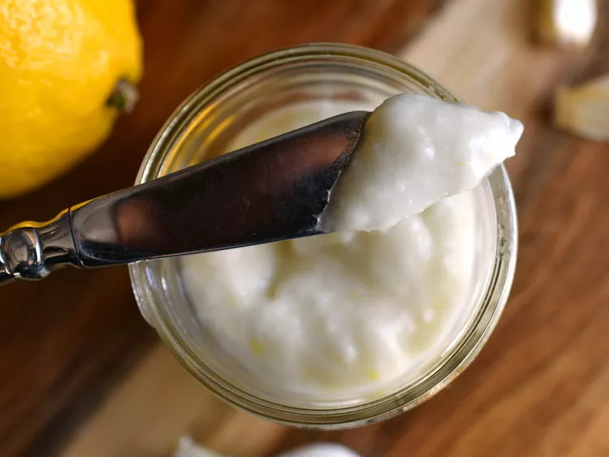

Toum

Description
This toum recipe makes a small batch of delicious Lebanese garlic dipping sauce. Not for the faint of heart! Keeps for weeks in the fridge. Serve at room temperature with Lebanese bread, hummus, and tabbouleh.
Ingredients
- 4 cloves garlic, peeled
- 1 pinch salt
- ¼ cup vegetable oil, or as needed
- 1 lemon, juiced
Steps
- Crush garlic in a mortar and pestle with a generous pinch of salt until smooth. Mix in oil as needed, a teaspoon at a time, until mixture is emulsified. Stir in the lemon juice.